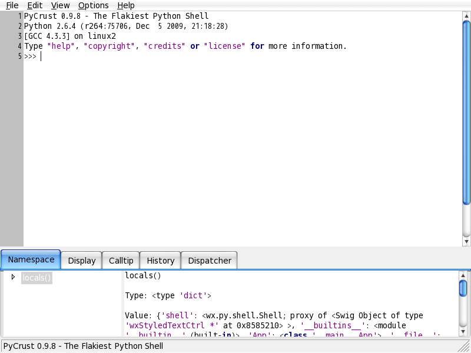

Python Library
IDE
ipython
SSH
paramiko
Num & Sci
NumPy
matplotlib
SciPy
GUI
wxPython
Package Management
distutils
setuptool
pip
Testing tool
Selenium
virtualenv
IDE
ipython
#安裝ipython
#使用distUtils安裝
Linux:~ # wget http://archive.ipython.org/release/0.10.1/ipython-0.10.1.tar.gz
Linux:~ # tar ipyton-0.10.1.tar.gz
Linux:~ # cd ipython-0.10.1
Linux:~/ipython-0.10.1 # python setup.py build
Linux:~/ipython-0.10.1 # python setup.py install
#使用pip安裝
Linux:~ # pip install ipython
ipython helpful command
| command |
description |
|---|
| ? |
Introduction and overview of IPython’s features. |
| %quickref |
Quick reference. |
| help |
Python’s own help system. |
| object? |
Details about ‘object’, use ‘object??’ for extra details. |
ipython usage
ipython的環境變數IPYTHONDIR預設為~/.ipython
In : import os
In : print os.path
In : import sys
In : print sys.path
In : %hist
# 預設寫入$IPYTHONDIR/history
In : %save tmp.py n[-m]
# 將輸入過的指令寫入檔案n,m為行數
In : %run tmp.py
# 執行python script
In : a = 1
In : b = "XYZ"
In : for l in lists:
print l
In : %macro mymacro n[-m]
# 將輸入過的指令寫成巨集
In : lists = [1,2,3,4]
In : mymacro
In : %whos
# 顯示目前變數/巨集
In : %store a
# 將變數寫入db, 重啟ipython仍會自動載入, 預設會存放$IPYTHONDIR/db
In : %store mymacro
# 將巨集寫入db, 重啟ipython仍會自動載入, 預設會存放$IPYTHONDIR/db
In : %store
# 顯示db中變數/巨集
In : %store -d a
# 刪除db中變數/巨集
In : %store -z
# 刪除db中所有變數/巨集
In : del a
# 刪除變數/巨集
In : %reset
# 刪除所有變數/巨集
In : import os
In : os?
In : a?
In : %pdoc os
# 說明文件
In : %psource os
# 看source code
In : %psearch o*
# 搜尋
In : %lsmagic
# 列出magic function
In : %quickref
In : %alias
# IPYTHON/ipythonrc
In : %unalias
SSH
paramiko
SSH、SFTP連線已有適合的函式庫paramiko, 在安裝paramiko之前有個相依pycrypto要先安裝
Num & Sci
NumPy
matplotlib
SciPy
在一般windows系統上可以安裝Python(x,y)達到整合環境
GUI
wxPython
wxPython是GUI API的一種（wxGTK和wxPython一樣，但wxGTK已經包含在wxPython裡面，所以裝wxPython就可以）
#安裝wxPython
wxPython內附有自己的IDE，如PyCrust.py等。另外還可以裝Boa Constructor（一種類似MVC模式的wxPython IDE）
Linux:~ $ alias PyWrap="python /usr/lib/python2.6/site-packages/wx-2.8-gtk2-unicode/wx/py/PyWrap.py"
Linux:~ $ PyWrap xx.py
#使用PyCrust作debuger
Linux:~ $ alias PyCrust='python /usr/lib/python2.6/site-packages/wx-2.8-gtk2-unicode/wx/py/PyCrust.py
Linux:~ $ PyCrut
#顯示如下

Package Management
|
distutils |
setuptool |
pip |
| Install |
python setup.py build
python setup.pu install [--prefix=/path] [--record=logfile]
|
easy_install pkg.egg
easy_install pkg[==ver]*
|
pip install pkg.zip
pip install [--install-option="--prefix=/path"] pkg[==ver]*
|
| remove |
cat logfile | xargs rm -rf |
easy_install -m pkg |
pip uninstall pkg |
| help |
python setup.py [command] --help |
easy_intell --help |
pip help |
| list |
|
yolk -l |
pip freeze |
| search |
|
|
pip search pkg |
*: ==可以改用>=、<=、>、<
Linux:~ # cat requirement.txt
Django==1.6
selenium==2.39
Linux:~ # pip install -r requirement.txt
Testing tool
Selenium
網站撰寫完成或是部署到伺服器上之後, 通常習慣使用人工的方式進行網站測試, 但使用人工測試不但花費大量的時間, 而且有時候會不小心忽略掉某些情境. 而 Selenium 是一套使用真實的瀏覽器進行自動化測試的工具, 它可模擬人為的動作進行網頁的操作, 可 Firefox 中輕易地建立測試案例 (Test Case), 測試案例中一條一條的指令將會像自動機器人一樣確實地執行, 並且記錄一切測試的過程與錯誤. 然後測試案例可以用多種程式語言 (Java、PHP、Ruby) 模擬不同的瀏覽器 (Firefox, IE, Safari, Chrome) 在不同的作業系統下 (Windows, OS X, Linux) 的運作情況, 並將Selenium的功能測試整合到專案中, 成為完整的整合測試.

# 使用 pip 安裝 selenium
Linux:~ # pip install selenium
Linux:~ # pip install xpath
# 建議安裝 xpath, 之後可使用 xpath 語法
selenium 的預設的 WebDriver 只支援 Firefox, 若要使用其他瀏覽器, 需要另安裝該瀏覽器 WebDriver, 在此以 Google Chrome 為例.
先到 http://chromedriver.storage.googleapis.com/index.html 下載對應 OS 的 WebDriver, 將WebDriver安裝在 $PATH 或 %PATH% 路徑下即可.
Linux:~ # cat ex.py
from selenium import webdriver
from selenium.webdriver.common.keys import Keys
def main():
# browser = webdriver.Firefox()
# 使用 Firefox WebDriver
browser = webdriver.Chrome()
# 使用 Chrome WebDriver
browser.get("http://www.google.com")
browser.implicitly_wait(30)
element = browser.find_element_by_id('lst-ib')
element.send_keys('python')
browser.implicitly_wait(30)
element.submit()
browser.close()
if __name__ == "__main__":
main()
Linux:~ # cat exut.py
import unittest
# 套用 unit test
from selenium import webdriver
from selenium.webdriver.common.keys import Keys
class WebpageTest(unittest.TestCase):
def setUp(self):
# Method called to prepare the test fixture.
# self.browser = webdriver.Firefox()
self.browser = webdriver.Chrome()
self.browser.get("http://www.google.com")
self.assertEqual('Google', self.browser.title)
def test_selector(self):
element = self.browser.find_element_by_id('lst-ib')
element.send_keys('python')
element.submit()
def tearDown(self):
# Method called immediately after the test method has been called and the result recorded.
self.browser.close()
if __name__ == "__main__":
unittest.main()
virtualenv
Linux:~ # pip install virtualenv
# 安裝 virtualenv
Linux:~ # virtualenv --no-site-package myprojec
# 建立新的虛擬環境
Linux:~ # source myproject/bin/active
# 載入虛擬環境
Reference
Announcements — IPython
wxPython
List of GUI testing tools
Selenium - Web Browser Automation
Selenium with Python
virtualenv